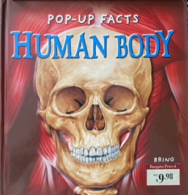

Pop-Up Facts: Human Body by Richard Dungworth
This book is so much fun. It has interactive pull tabs that show me how different parts of the body work. It also has pop ups on every page that bring the body to life.
What Does Baby Do by Begin Smart Books
This was my favorite book from birth into my 2nd year. It has other book just like it such as "What Does Baby Say" that I also love.
Where is Mama: A Pop-Up Story by Yating Hung
This book illustrates baby tadpoles searching for their mama frog after emerging from their eggs. The pop ups are very unique and make it really fun to read.
Love You Forever by Robert Munsch
Love You Forever was my mom's favorite when she was little. Everytime she reads it to me she hugs me so tight and tells me she loves me so much.